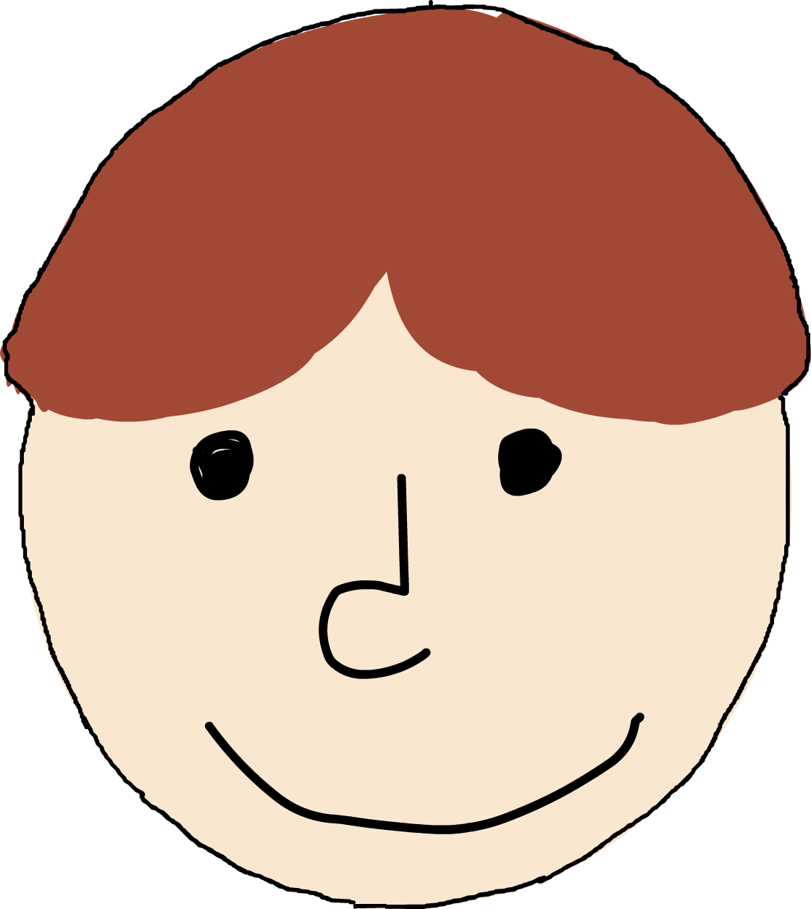
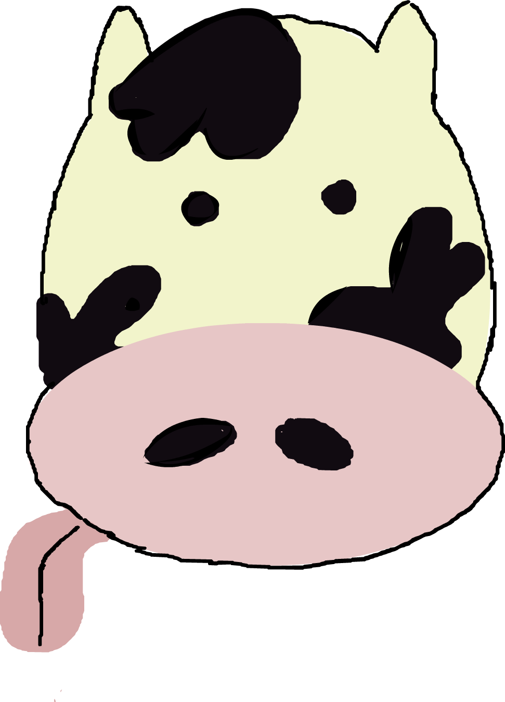
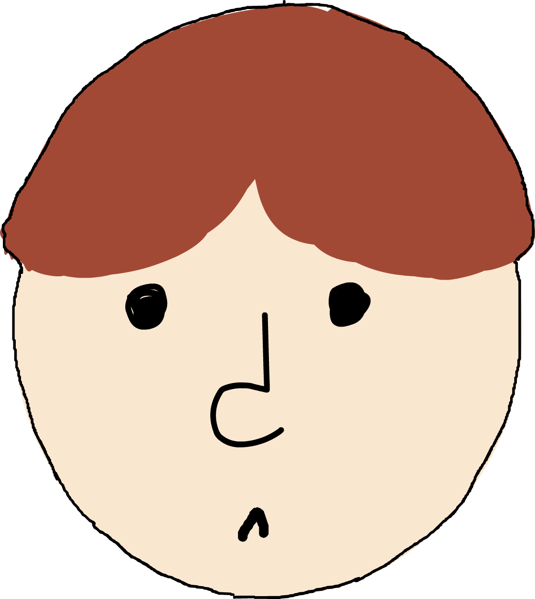
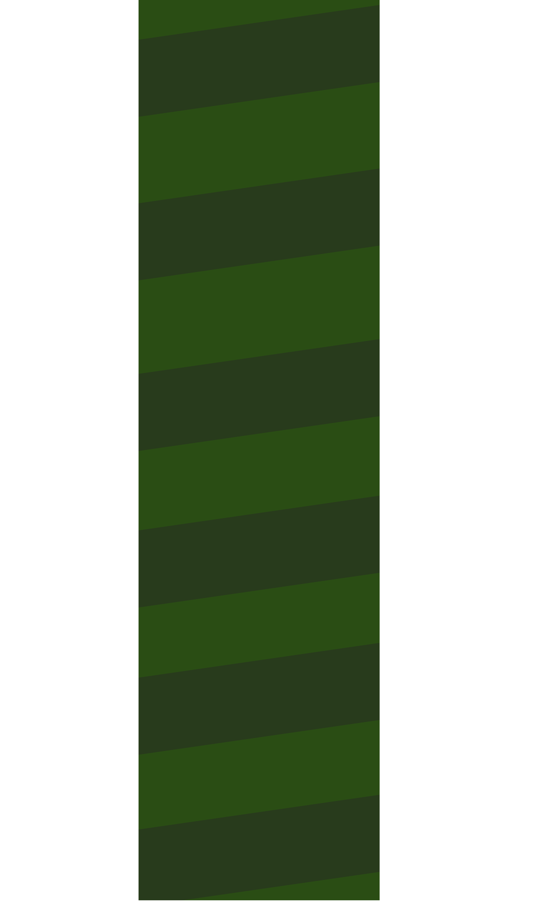
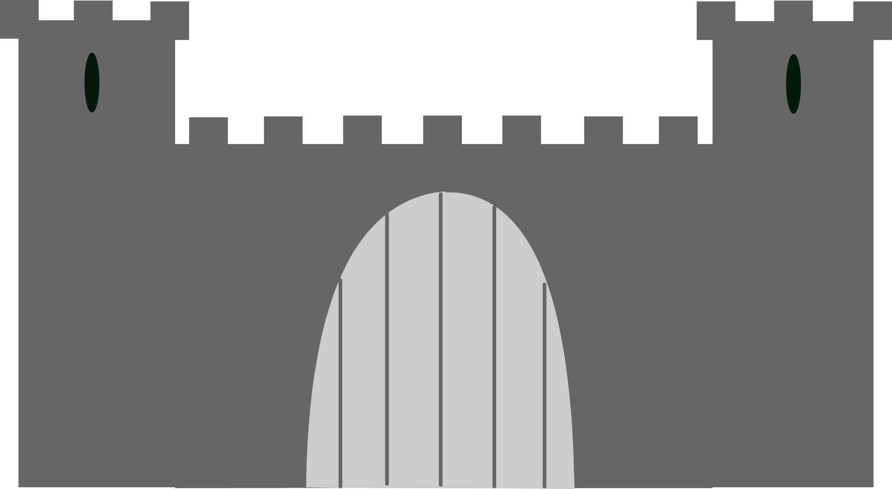
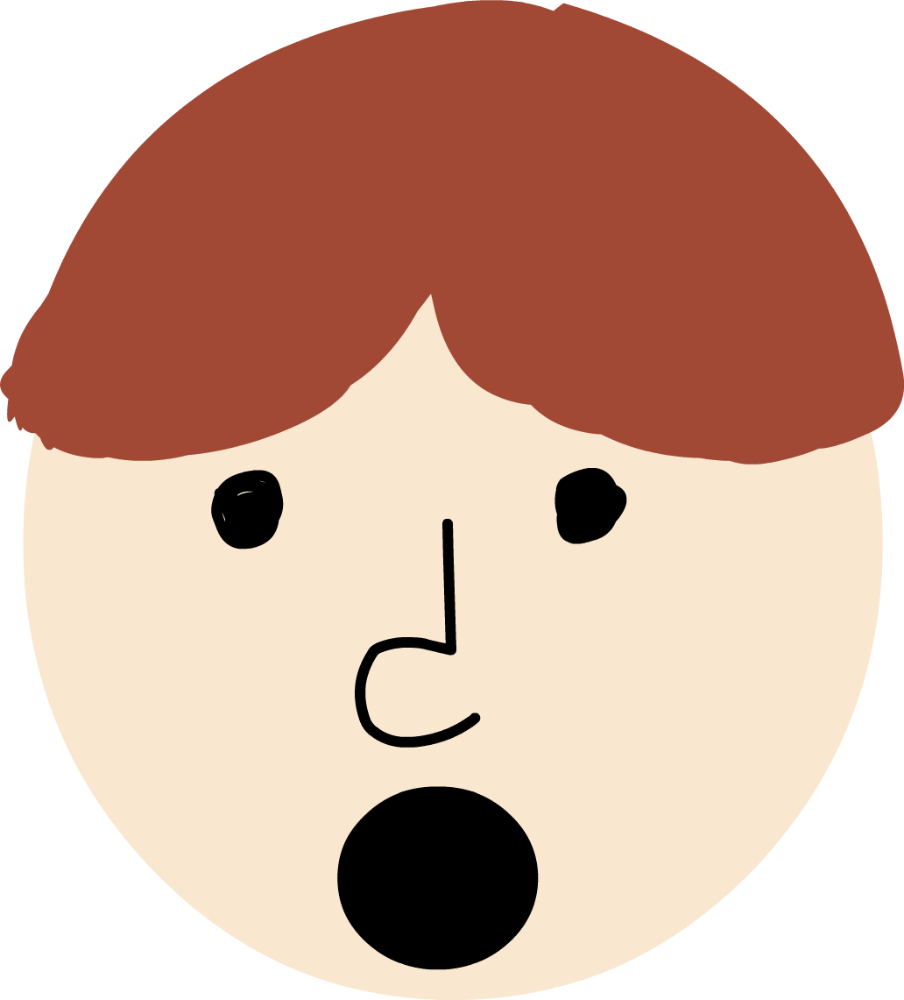
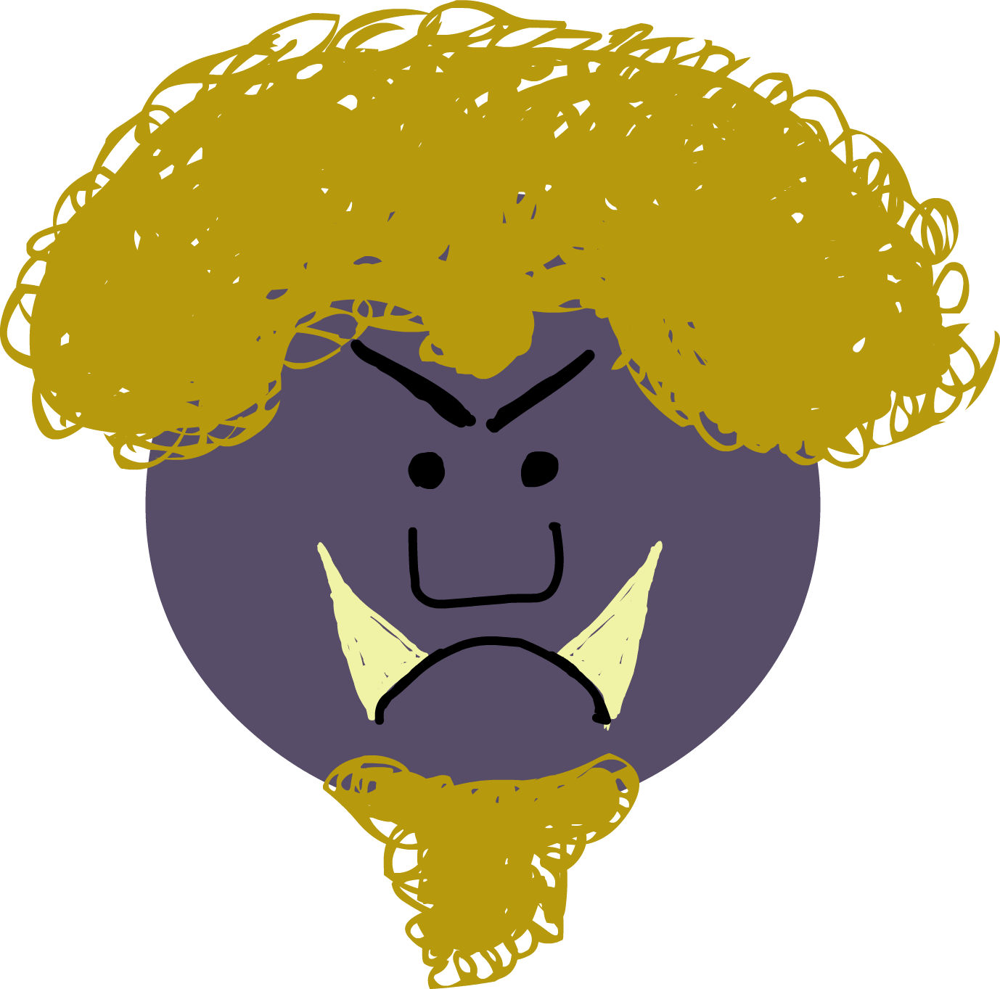

Jack and the
Beanstalk
⇑ USE UP & DOWN ARROWS FOR BEST EXPERIENCE ⇓
In the time of King Alfred there lived a poor widow, with
an only son. Her son was called Jack - a very lazy fellow.
His mother had hard work to keep him and herself, and being very ailing
she was obliged to sell nearly all her goods including her cow, so she said to Jack, "You have
brought me to poverty, so that I must sell my cow."
Jack for the first time felt that he had been a bad son, so he said to his
mother, "Let me sell the cow, and I will be for the future good." It so happened that Jack
met a butcher showing Jack some beautiful beans of all colours, so he said, "I will give you
all these beans for your cow" so Jack thought it was a great offer, and at once sold the cow.
Jack now hastened home to his mother with the beans in high glee, and his mother
was very vexed, and said he had ruined them, and for the first time lost her temper, and threw the
beans out the window, and they both went supperless to bed.
When Jack awoke in the morning he was astonished to see in the garden something
growing so high so like a ladder that Jack said to his mother, "I will climb up and see what is
at the top".
Jack saw the castle and continued his journey, and soon arrived at the castle, and
knocked at the door quite bold. The door was opened by the giant's wife, Jack pleaded so hard that
she gave him some supper and hid him in the copper.
The Giant soon returned, and had his supper, and soon fell asleep, and Jack now came from his hiding,
seized the harp which played some beautiful tunes without being touched.Jack was making off with it,
but it being enchanted, cried out, "Master, master," which soon awoke the giant.
Jack soon arrived at the bottom of the bean stalk, and calling for his chopper he cut the
stalk, so that the giant fell down and was killed...






